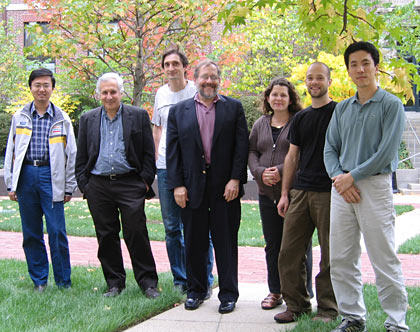

News Archives : 2007 : Technicolor Brains: Mapping Neural Circuits in "Brainbow" Mice
by Robyn Bennis, Ryan Draft, Hyuno Kang, Jeff Lichtman, Jean Livet, Joshua Sanes and Tamily Weissman
November 28, 2007

The co-authors (left to right): Ju Lu, Jeff W. Lichtman, Jean Livet, Joshua R. Sanes, Tamily A. Weissman, Ryan W. Draft, Hyuno Kang
More than a century ago, Ramón y Cajal’s use of Golgi staining to visualize nerve cells opened the door to modern neurobiology: by staining a small number of neurons in their entirety, their axons and dendrites could be identified and followed as they coursed through the brain. But Golgi staining labels cells in one color, which means that if too many cells are labeled, their branching axons and dendrites become impossible to untangle. What would be of benefit to neuroscientists is a method to clearly see each of the many neurons that belong to a given brain circuit at one time.
In a paper published in the November 1 issue of Nature (Livet et al, 2007), we present transgenic strategies that give rise to multicolor neuronal labeling in each brain. We use DNA recombination to randomly shuffle in each nerve cell genes for fluorescent proteins of different colors. As a result of this method, each nerve cell expresses its own mixture of red, green, and blue fluorescent proteins. This blend of primary colors gives each cell its own hue. In these ‘Brainbow’ animals, even densely packed neurons are individually identifiable.
The ‘Brainbow’ multicolor labeling provides a way to map complex neuronal circuitry with light microscopy. Color differences between neurons provide a way to parse out neighboring axons and dendrites, and to distinguish between the various neurons that contact a single postsynaptic target cell. This technology should be helpful not only in generating high resolution maps of the brain’s complex circuits but also in understanding how these circuits get established in development, how they change in old age and how they may be miswired in animal models of disorders of brain function.
The cover of Nature, courtesy of the Lichtman and Sanes labs, shows a portion of the hippocampus within a ‘Brainbow’ mouse. The multicolored neurons of the dentate gyrus (bottom) lie beneath the cells of the arching CA1 region, while neurons of the cerebral cortex can be seen twinkling above.
Further Reading: